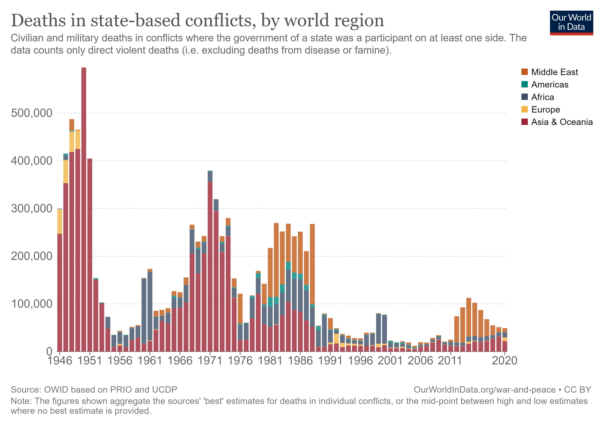
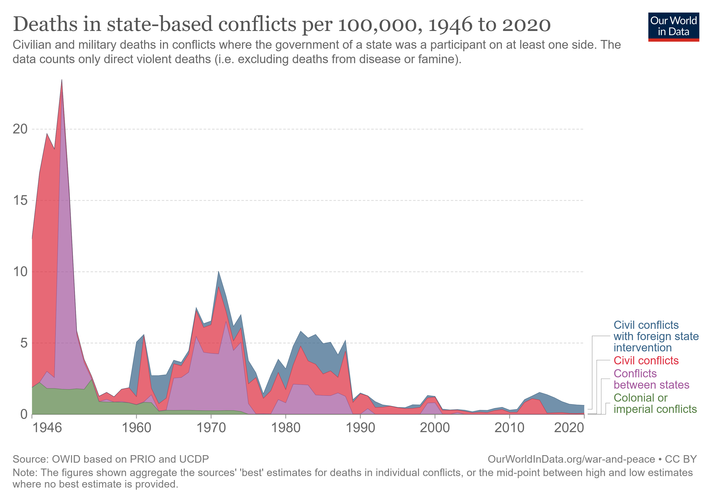
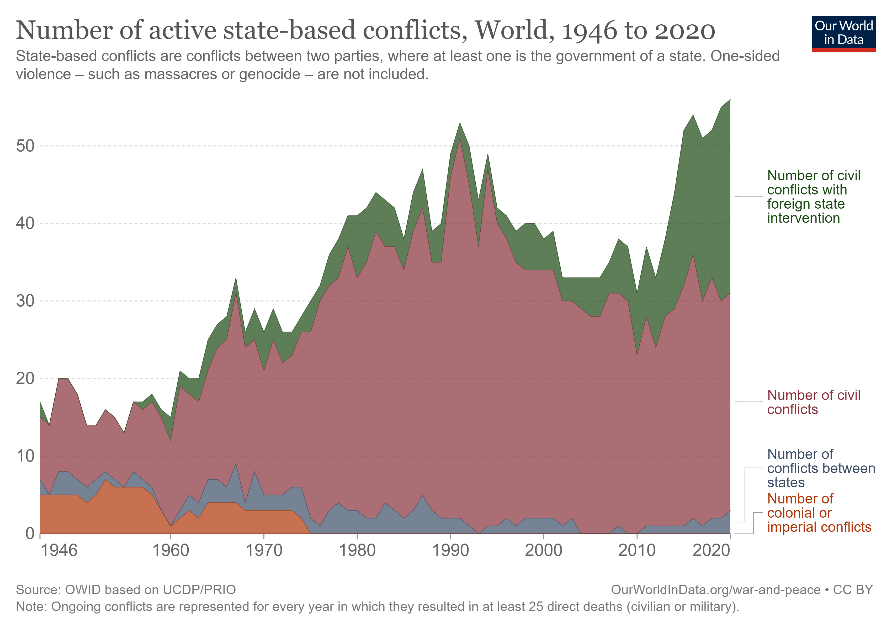
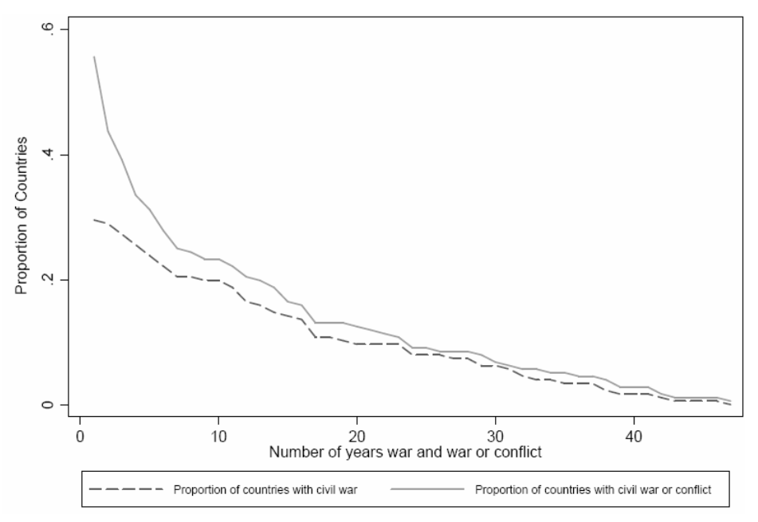
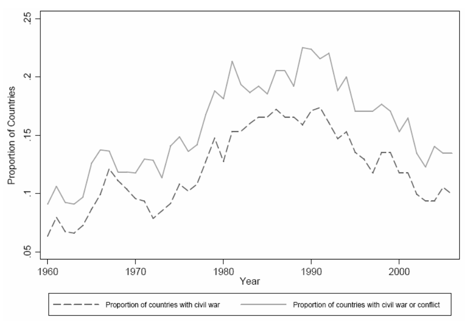
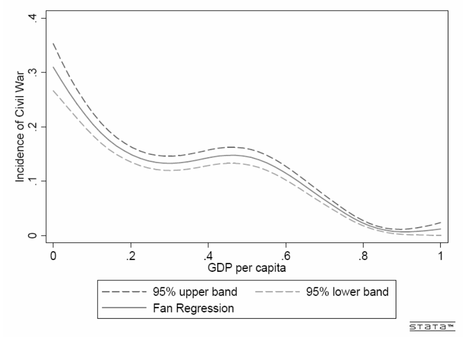
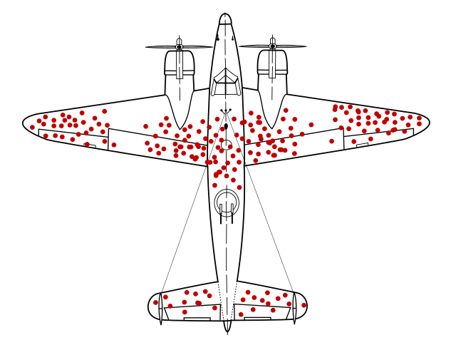
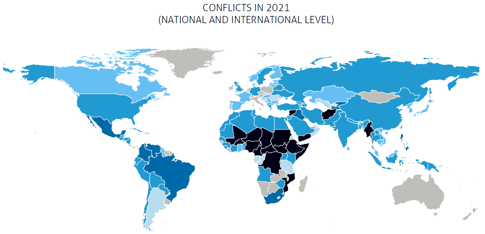
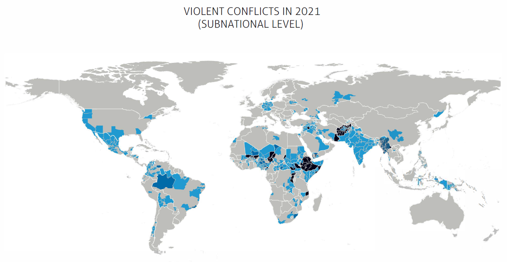

La guerra es la excepción no la regla
- Hechos estilizados
- Conflicto civil interno
- Teorías de conflicto (armado)
- Recursos naturales y conflicto civil
Hechos estilizados
Cantidad absoluta de muertes en gradual declive desde 1945
Hechos estilizados (cont.)
También han bajado en terminos relativos a la población
Hechos estilizados (cont.)
Pero ha aumentado el número de conflictos de menor mortalidad
Naturaleza de conflictos
- Notorio aumento y virulencia de conflictos dentro de estados \(\longrightarrow\) guerras civiles
- Los conflictos relacionados con la expansión o defensa de territorios coloniales se terminaron con la decolonización. Los conflictos entre estados prácticamente han dejado de existir [ponele]
- El aumento en el número de conflictos (civiles) refleja básicamente un aumento del número de conflictos de pequeña escala
- Blattman and Miguel (2010) distinguen
- Guerras civiles \(\longrightarrow\) cuentan más de 1000 muertes en un año
- Conflictos civiles \(\longrightarrow\) cuentan más de 25 muertes en un año
- Más de 1/3 de países han tenido guerras civiles mientras que la mitad han tenido algún tipo de conflicto civil.
Naturaleza de conflictos (cont.)
- No sólo es común el conflicto, sino también persistente. Alrededor de un 20% de los países han experimentado al menos 10 años de guerra civil desde 1960
- La proporción de países involucrados en conflictos civiles incrementó para tener un pico en los 1990s para luego bajar a mediados de los 2000s
- La pregunta surgió naturalmente ¿por qué tantos conflictos?
- Una respuesta obvia \(\longrightarrow\) pobreza. Después de todo, la evidencia sugiere que la correlación es muy robusta
Naturaleza de conflictos (cont.)
Persistencia de los conflictos
Naturaleza de conflictos (cont.)
Aumento de los conflictos
Naturaleza de conflictos (cont.)
Conflictos y PIB per cápita
Problema de sesgos
- El hecho es que aún los peores enemigos prefieren odiarse en paz –medios, libros e historia focalizan en los eventos ocurridos.
- No hay libros sobre eventos evitados.
- En Africa, se ha registado 1 (un) caso principal de violencia étnica por año dentro de un total potencial de 2000.
- En India, menos de 1 (un) disturbio cada 10 millones de personas por año y tasas de mortalidad de 16 cada 10 millones
- Guerras y conflictos son eventos mas salient
Problema de segos (cont.)
- Foco en las fallas es un ejemplo de sesgo de selección \(\longrightarrow\) dos consecuencias importantes
- Exageramos la frecuencia e intensidad del conflicto
- Confundimos las raíces de la guerra y los senderos hacia la paz
- Ilustración \(\longrightarrow\) causas comunmente citadas al fracasar la paz líderes fallidos, pobreza extrema, injusticias históricas, armas baratas y así.
- Pero esto ignora la cantidad de veces que el conflicto fue evitado y existían, sin embargo, las mismas condiciones.
Problema de segos (cont.)
Sesgo del sobreviviente
Problema de segos (cont.)
Sesgo del sobreviviente. Cuando los aviones norteamericanos regresaron de misiones sobre posiciones alemanas en la 2GM, estaban llenos de agujeros de bala sobre el cuerpo y las alas del avión. El ejército de EEUU encargó a sus ingenieros añadir más protección a estas partes. Un estadístico llamado Abraham Wald estuvo en desacuerdo y dijo que los ingenieros debían hacer exactamente lo opuesto: proteger los motores y la cabina donde los aviones retornados estaban intactos. Había deducido algo clave: los agujeros faltantes debían estar en los aviones faltantes. Las balas a los motores y la cabina hacían caer a los aviones. El ejército erroneamente se enfocaba en una muestra sesgada y por lo tanto identificaba causas erróneas del fenómeno.
Problema de segos (cont.)
- Cuando hablamos de conflicto, cometemos un error similar pero opuesto \(\longrightarrow\) nos enfocamos mucho en las veces que la paz falla [mirar sólo los aviones caídos!]
- Estos eventos muestran que analizando los que “cayeron” sólo cuenta parte de la historia y muchas veces de manera confusa –de las cientos de balas que tenían los aviones caídos ¿cuál/es fueron las determinantes de la caída?
- Para encontrar las raíces de la guerra y la violencia, debemos analizar los conflictos que se mantienen pacíficos
Conflictos políticos
- Un tipo de conflicto muy relevant es el conflicto político. El Heidelberg Institute for International Conflict Research (HIIK) elabora desde hace 30 años el Conflict Barometer
- No focalizan en víctimas sino en cantidad de conflictos y su naturaleza
- Distinguen 5 (cinco) tipos de conflicto según su intensidad
- Disputa
- Crisis no violenta
- Crisis violenta
- Guerra limitada
- Guerra
Conflictos políticos (cont.)
Todos los conflictos - Nivel nacional
Conflictos políticos (cont.)
Conflictos violentos - Nivel subnacional